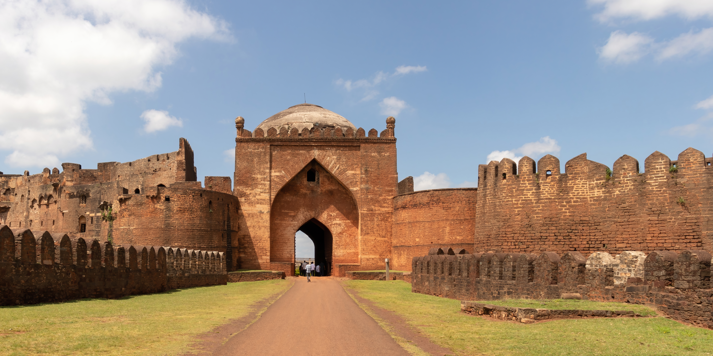
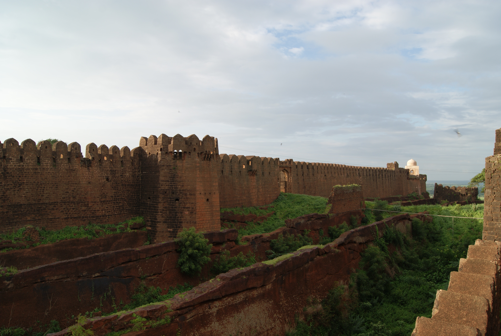
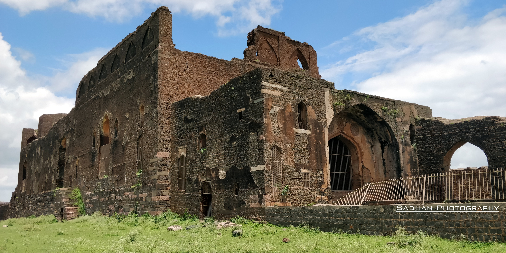
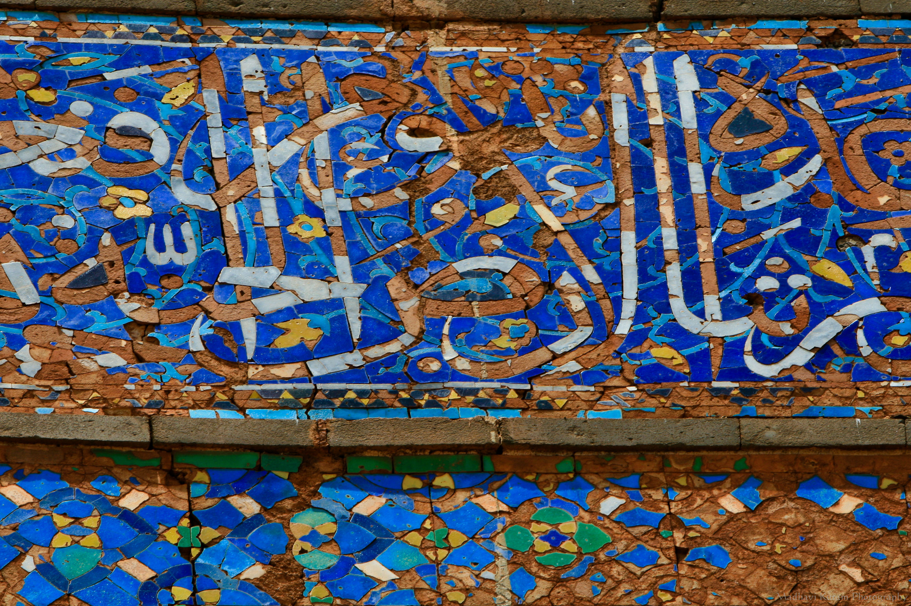
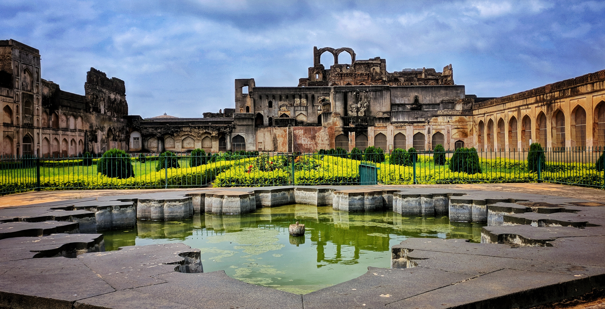
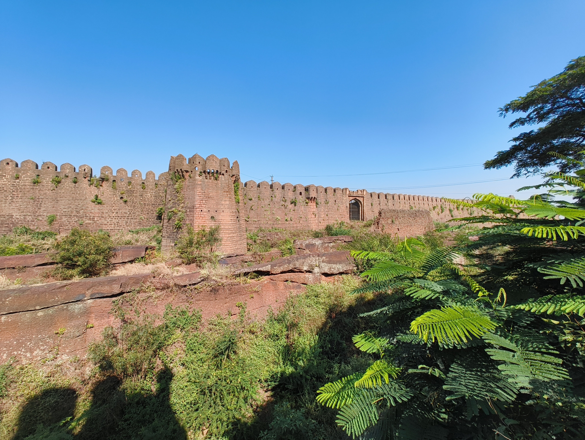
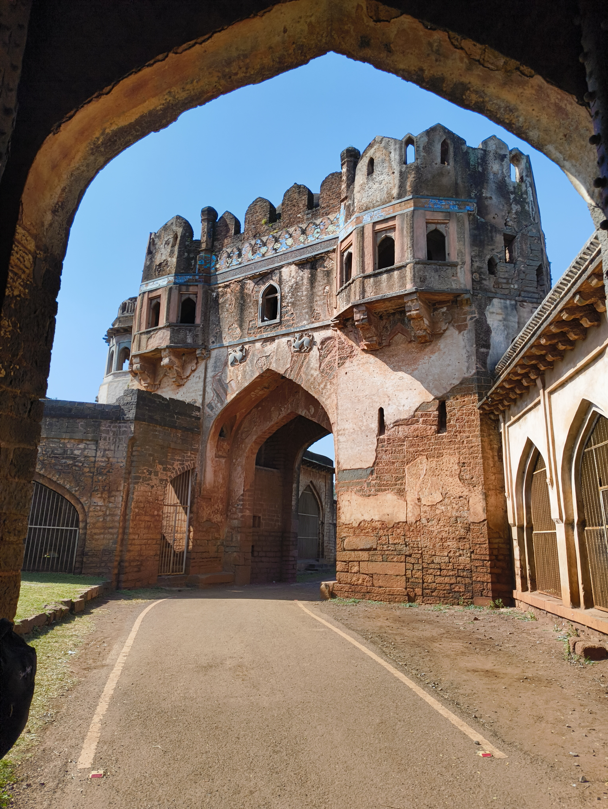

About Bidar Fort
Bidar Fort is one of the most important historical landmarks in Bidar, Karnataka. Located in the old city area, the fort is known for its massive defensive walls, gateways, palaces, mosques and historic architecture.
The fort stands on the edge of the Bidar plateau and represents the rich architectural and cultural heritage of the Deccan region.
History
Bidar became an important centre of the Bahmani Kingdom in the 15th century. Sultan Ahmad Shah I shifted the capital from Gulbarga to Bidar and rebuilt the fort around 1428–1432.
Over the centuries, Bidar Fort came under the rule of different dynasties including the Barid Shahi, Adil Shahi and Mughal rulers, followed later by the Nizams.
Architecture
The fort has an irregular rhombus-shaped layout, massive stone walls and a historic triple-moat defensive system. Several important monuments are located within the fort complex.
Bidar Fort Gallery
Explore the historic beauty of Bidar Fort.








📍 Location
Bidar Fort, Old City, Bidar, Karnataka, India
🗺️ View on Google Maps